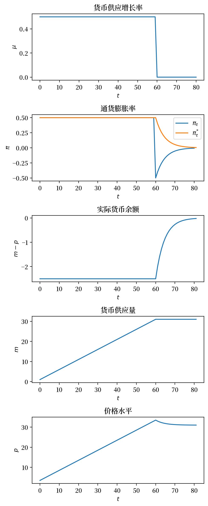
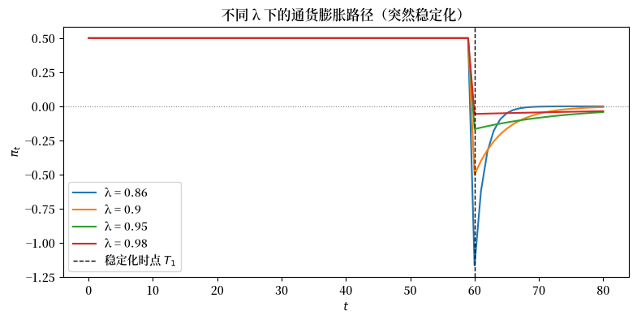
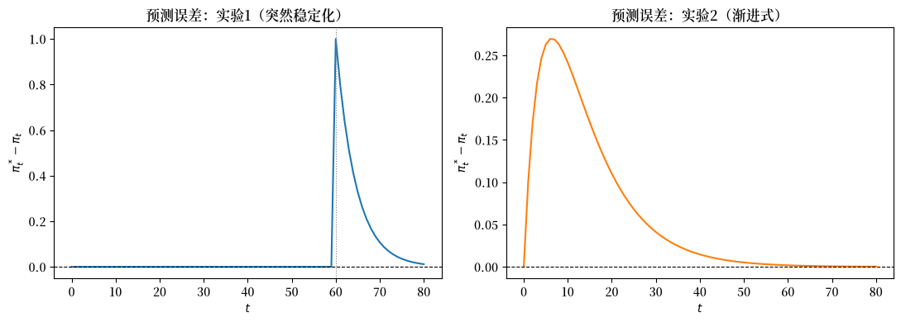
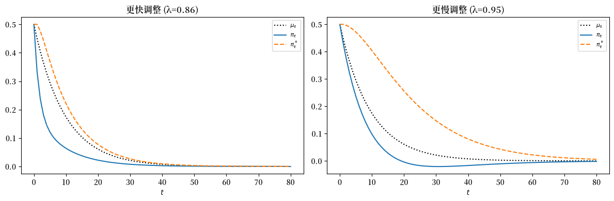

15. 自适应预期下的货币主义价格水平理论#
15.1. 引言#
本讲座可以被看作是 货币主义价格水平理论 的续篇或前传。
我们将运用线性代数来探讨另一种”货币主义”或”财政”价格水平理论。
与 货币主义价格水平理论 中的模型类似，本模型认为，当政府实施持续性的财政赤字并通过印钞来弥补时，会推高价格水平并导致持续通货膨胀。
不同于 货币主义价格水平理论 中的”完全预见”或”理性预期”版本，本讲座介绍的是 [Cagan, 1956] 用于研究恶性通货膨胀动态的”自适应预期”版本模型。
该模型包含以下几个要素：
一个实际货币需求函数，表明所需实际货币余额的对数与公众预期通胀率呈负相关
一个自适应预期模型，描述公众预期通胀率如何随过去实际通胀率的变化而调整
一个使货币需求等于货币供给的均衡条件
一个外生的货币供应增长率序列
我们的模型与凯根的原始模型非常接近。
与 现值 和 消费平滑 讲座一样，我们只需要用到矩阵乘法和矩阵求逆这些基本的线性代数运算。
为了便于使用线性矩阵代数作为主要分析工具，我们将研究模型的有限视界版本。
15.2. 模型结构#
令：
\( m_t \) 为名义货币余额的对数
\(\mu_t = m_{t+1} - m_t \) 为名义货币余额的增长率
\(p_t \) 为价格水平的对数
\(\pi_t = p_{t+1} - p_t \) 为 \(t\) 到 \( t+1\) 期间的通胀率
\(\pi_t^*\) 为公众对 \(t\) 到 \(t+1\) 期间通胀率的预期
\(T\) 为时间跨度 – 即模型确定 \(p_t\) 的最后一期
\(\pi_0^*\) 为公众对第0期到第1期通胀率的初始预期
实际货币余额 \(\exp\left(m_t^d-p_t\right)\) 的需求由以下版本的凯根需求函数决定：
该方程表明，实际货币余额需求与公众预期通胀率成反比，其敏感程度由 \(\alpha\) 衡量。
将方程 (15.1) 中的货币需求对数 \(m_t^d\) 设为等于货币供给对数 \(m_t\)，并求解价格水平对数 \(p_t\)，得到：
对方程 (15.2) 在 \(t+1\) 时刻与 \(t\) 时刻取差分，得到：
我们假设预期通胀率 \(\pi_t^*\) 遵循由 [Friedman, 1956] 和 [Cagan, 1956] 提出的以下自适应预期机制，其中 \(\lambda\in [0,1]\) 表示预期通胀的权重。
作为模型的外生输入，我们取初始条件 \(m_0, \pi_0^*\) 以及货币增长序列 \(\mu = \{\mu_t\}_{t=0}^T\)。
作为模型的内生输出，我们想求出序列 \(\pi = \{\pi_t\}_{t=0}^T, p = \{p_t\}_{t=0}^T\) 作为外生输入的函数。
我们将通过研究模型输出如何随输入变化而变化来进行一些思想实验。
15.3. 关键方程的矩阵表示#
首先，我们将方程 (15.4) 中的自适应预期模型写成 \(t=0, \ldots, T\) 的矩阵形式：
让我们将上述方程写成：
其中 \(A\) 是一个 \((T+2) \times (T+2)\) 矩阵，\(B\) 是一个 \((T+2)\times (T+1)\) 矩阵，\(\pi^*\)、\(\pi_0\) 和 \(\pi_0^*\) 是相应的向量。这些矩阵和向量的具体形式可以通过对齐上述两个等式隐式地得到。
接下来，我们将关键方程 (15.3) 表示为矩阵形式
让我们用向量和矩阵将上述方程系统表示为:
其中 \(C\) 是一个 \((T+1) \times (T+2)\) 矩阵，其具体形式通过对齐本式与前述方程系统隐式地确定。
15.4. 从矩阵表述中获取洞见#
现在我们有了求解 \(\pi\) 作为 \(\mu, \pi_0, \pi_0^*\) 函数所需的所有要素。
这意味着:
将上述方程两边乘以左边矩阵的逆矩阵，得到:
求解出方程 (15.7) 中的 \(\pi^*\) 后，我们就可以利用方程 (15.6) 求出 \(\pi\):
这样，我们就解出了模型确定的两个关键内生时间序列，即预期通货膨胀率序列 \(\pi^*\) 和实际通货膨胀率序列 \(\pi\)。
有了这些结果，我们就可以借助方程 (15.2) 迅速计算出价格水平对数序列 \(p\)。
让我们来看看这一步的具体细节。
由于我们现在已知 \(\mu\)，很容易计算出 \(m\)。
因此，注意到我们可以将方程
表示为矩阵形式:
将方程 (15.8) 的两边都乘以左侧矩阵的逆矩阵，我们得到
方程 (15.9) 表明，时间 \(t\) 的货币供应对数等于初始货币供应对数 \(m_0\) 加上 \(0\) 到 \(t\) 时间之间货币增长率的累积。
然后我们可以从方程 (15.2) 计算每个 \(t\) 的 \(p_t\)。
我们可以为 \(p\) 写一个紧凑的公式：
其中
这就是去掉最后一个元素的 \(\pi^*\)。
15.5. 预测误差与模型计算#
我们的计算将验证
因此一般来说
在包含类似方程 (15.4) 的自适应预期假设作为其组成部分的模型中，这种结果是典型的。
在 货币主义价格水平理论 中，我们研究了该模型的一个版本，用”完全预见”或”理性预期”假设替代了假设 (15.4)。
但现在，让我们深入研究一下，用该模型的自适应预期版本进行一些计算。
像往常一样，我们将从导入一些 Python 模块开始。
import numpy as np
from collections import namedtuple
import matplotlib.pyplot as plt
import matplotlib as mpl
FONTPATH = "fonts/SourceHanSerifSC-SemiBold.otf"
mpl.font_manager.fontManager.addfont(FONTPATH)
plt.rcParams['font.family'] = ['Source Han Serif SC', 'DejaVu Sans']
Cagan_Adaptive = namedtuple("Cagan_Adaptive",
["α", "m0", "Eπ0", "T", "λ"])
def create_cagan_adaptive_model(α = 5, m0 = 1, Eπ0 = 0.5, T=80, λ = 0.9):
return Cagan_Adaptive(α, m0, Eπ0, T, λ)
md = create_cagan_adaptive_model()
我们用以下的函数来求解模型并且绘制我们感兴趣的变量。
def solve_cagan_adaptive(model, μ_seq):
" 在有限时间内求解凯根模型。"
α, m0, Eπ0, T, λ = model
A = np.eye(T+2, T+2) - λ*np.eye(T+2, T+2, k=-1)
B = np.eye(T+2, T+1, k=-1)
C = -α*np.eye(T+1, T+2) + α*np.eye(T+1, T+2, k=1)
Eπ0_seq = np.append(Eπ0, np.zeros(T+1))
# Eπ_seq 的长度为 T+2
Eπ_seq = np.linalg.solve(A - (1-λ)*B @ C, (1-λ) * B @ μ_seq + Eπ0_seq)
# π_seq 的长度为 T+1
π_seq = μ_seq + C @ Eπ_seq
D = np.eye(T+1, T+1) - np.eye(T+1, T+1, k=-1) # D 是方程 (14.8) 中的系数矩阵
m0_seq = np.append(m0, np.zeros(T))
# m_seq 的长度为 T+2
m_seq = np.linalg.solve(D, μ_seq + m0_seq)
m_seq = np.append(m0, m_seq)
# p_seq 的长度为 T+2
p_seq = m_seq + α * Eπ_seq
return π_seq, Eπ_seq, m_seq, p_seq
def solve_and_plot(model, μ_seq):
π_seq, Eπ_seq, m_seq, p_seq = solve_cagan_adaptive(model, μ_seq)
T_seq = range(model.T+2)
fig, ax = plt.subplots(5, 1, figsize=[5, 12], dpi=200)
ax[0].plot(T_seq[:-1], μ_seq)
ax[1].plot(T_seq[:-1], π_seq, label=r'$\pi_t$')
ax[1].plot(T_seq, Eπ_seq, label=r'$\pi^{*}_{t}$')
ax[2].plot(T_seq, m_seq - p_seq)
ax[3].plot(T_seq, m_seq)
ax[4].plot(T_seq, p_seq)
y_labs = [r'$\mu$', r'$\pi$', r'$m - p$', r'$m$', r'$p$']
subplot_title = [r'货币供应增长率', r'通货膨胀率', r'实际货币余额', r'货币供应量', r'价格水平']
for i in range(5):
ax[i].set_xlabel(r'$t$')
ax[i].set_ylabel(y_labs[i])
ax[i].set_title(subplot_title[i])
ax[1].legend()
plt.tight_layout()
plt.show()
return π_seq, Eπ_seq, m_seq, p_seq
15.6. 稳定性的技术条件#
在构建我们的示例时，我们假设 \((\lambda, \alpha)\) 满足
这个条件的来源是以下一系列推导：
通过确保 \(\pi_t\) 的系数绝对值小于1，条件(15.11)保证了由我们推导过程最后一行描述的 \(\{\pi_t\}\) 动态的稳定性。
读者可以自由地探索违反条件(15.11)的示例中的结果。
print(np.abs((md.λ - md.α*(1-md.λ))/(1 - md.α*(1-md.λ))))
0.8
15.7. 实验#
现在我们来看一些实验。
15.7.1. 实验1#
我们将研究这样一种情形：货币供应增长率在 \(t=0\) 到 \(t= T_1\) 期间保持为 \(\mu_0\)，然后在 \(t=T_1\) 时永久下降到 \(\mu^*\)。
因此，令 \(T_1 \in (0, T)\)。
于是，在 \(\mu_0 > \mu^*\) 的情况下，我们假设
请注意，我们在 货币主义价格水平理论 中理性预期版本的模型中正好研究了同样的实验。
因此，通过比较两个讲座中的结果，我们可以了解假设自适应预期（如本讲座）而不是假设理性预期（如另一讲座）所带来的影响。
# 实验1的参数
T1 = 60
μ0 = 0.5
μ_star = 0
μ_seq_1 = np.append(μ0*np.ones(T1), μ_star*np.ones(md.T+1-T1))
# 求解并绘图
π_seq_1, Eπ_seq_1, m_seq_1, p_seq_1 = solve_and_plot(md, μ_seq_1)
findfont: Failed to find font weight normal, now using 600.
findfont: Failed to find font weight normal, now using 600.
findfont: Failed to find font weight normal, now using 600.
findfont: Failed to find font weight normal, now using 600.
{kind=link}

我们邀请读者将这里的结果与 货币主义价格水平理论 中研究的理性预期下的结果进行比较。
请注意，在时间 \(T_1\) 货币供应增长率突然下降时，实际通货膨胀率 \(\pi_t\) 是如何”超调”其最终稳态值的。
我们邀请你自己解释这种超调现象的根源，以及为什么它不会出现在该模型的理性预期版本中。
15.7.2. 实验2#
现在我们来做一个不同的实验，即一个渐进式的稳定化过程，其中货币供应增长率从一个较高的值平稳地下降到一个持续较低的值。
虽然价格水平的通货膨胀率最终会下降，但它下降的速度比最终导致其下降的驱动力——即下降的货币供应增长率——要慢。
通货膨胀率下降迟缓的原因在于，在从高通胀向低通胀过渡的过程中，预期通货膨胀率 \(\pi_t^*\) 持续高于实际通货膨胀率 \(\pi_t\)。
# 参数
ϕ = 0.9
μ_seq_2 = np.array([ϕ**t * μ0 + (1-ϕ**t)*μ_star for t in range(md.T)])
μ_seq_2 = np.append(μ_seq_2, μ_star)
# 求解并绘图
π_seq_2, Eπ_seq_2, m_seq_2, p_seq_2 = solve_and_plot(md, μ_seq_2)
{kind=link}
15.8. 练习#
Exercise 15.1
超调现象对学习速度 \(\lambda\) 的敏感性。
对于实验1（在 \(T_1 = 60\) 时从 \(\mu_0 = 0.5\) 突然稳定化到 \(\mu^* = 0\)），针对 \(\lambda \in \{0.86,\, 0.90,\, 0.95,\, 0.98\}\) 求解模型，并在同一张图上绘制每个值对应的实际通货膨胀率 \(\pi_t\)。
a. 在稳定区域内，随着 \(\lambda\) 的变化，稳定化后收敛的符号和速度如何变化？
b. 对每个 \(\lambda\)，输出 \(\rho\) 以及 \(t \geq T_1\) 时 \(\pi_t\) 绝对值的峰值。
Solution to Exercise 15.1
T1 = 60
μ0 = 0.5
μ_star = 0.0
λ_vals = [0.86, 0.90, 0.95, 0.98]
fig, ax = plt.subplots(figsize=(9, 4))
for λ in λ_vals:
m = create_cagan_adaptive_model(λ=λ)
μ_seq = np.append(μ0 * np.ones(T1), μ_star * np.ones(m.T + 1 - T1))
π_seq, _, _, _ = solve_cagan_adaptive(m, μ_seq)
ax.plot(range(m.T + 1), π_seq, label=f'λ = {λ}')
ax.axvline(T1, linestyle='--', color='black', lw=1, label='稳定化时点 $T_1$')
ax.axhline(μ_star, linestyle=':', color='gray', lw=0.8)
ax.set_xlabel('$t$')
ax.set_ylabel(r'$\pi_t$')
ax.set_title('不同 λ 下的通货膨胀路径（突然稳定化）')
ax.legend()
plt.show()
print(f'{"λ":>6} | {"ρ":>10} | {"|ρ|<1":>8} | {"T1之后 |π| 的峰值":>20}')
print('-' * 56)
for λ in λ_vals:
m = create_cagan_adaptive_model(λ=λ)
μ_seq = np.append(μ0 * np.ones(T1), μ_star * np.ones(m.T + 1 - T1))
π_seq, _, _, _ = solve_cagan_adaptive(m, μ_seq)
ρ = (λ - m.α * (1 - λ)) / (1 - m.α * (1 - λ))
peak = np.max(np.abs(π_seq[T1:]))
print(f'{λ:>6.2f} | {ρ:>10.4f} | {str(abs(ρ) < 1):>8} | {peak:>20.4f}')
{kind=link}

λ | ρ | |ρ|<1 | T1之后 |π| 的峰值
--------------------------------------------------------
0.86 | 0.5333 | True | 1.1667
0.90 | 0.8000 | True | 0.5000
0.95 | 0.9333 | True | 0.1667
0.98 | 0.9778 | True | 0.0556
对于默认的 \(\alpha = 5\)，这四个值都满足稳定性条件 \(|\rho| < 1\)，且都有 \(\rho > 0\)。
在这四个值中，\(\lambda = 0.86\) 的情形具有最大的初始超调，随后收敛速度最快。
随着 \(\lambda\) 趋近于1，预期变得更具惯性，因此稳定化后的响应衰减得更慢，但起始跳跃幅度更小。
对于 \(\alpha = 5\)，若要出现振荡式的稳定响应，则需要 \(0.8 < \lambda < 5/6\)。
Exercise 15.2
自适应预期下的系统性预测误差。
讲座中指出，在自适应预期下，一般而言 \(\pi_t^* \neq \pi_t\)，这与理性预期均衡形成对比。
对于默认模型（md）以及两个实验：
a. 计算并绘制预测误差 \(e_t = \pi_t^* - \pi_t\)，其中 \(t = 0, 1, \ldots, T\)。
b. 对于每个实验，判断在反通胀过程中 \(e_t\) 是系统性地为正还是为负，并解释为什么在理性预期下这种系统性偏差无法持续存在。
（注意 solve_cagan_adaptive 返回的 Eπ_seq 长度为 \(T+2\)，而 π_seq 的长度为 \(T+1\)；使用 Eπ_seq[:-1] 使二者对齐。）
Solution to Exercise 15.2
T1 = 60
μ0 = 0.5
μ_star = 0.0
# 实验1的序列
μ_seq_1 = np.append(μ0 * np.ones(T1), μ_star * np.ones(md.T + 1 - T1))
π1, Eπ1, _, _ = solve_cagan_adaptive(md, μ_seq_1)
# 实验2的序列
ϕ = 0.9
μ_seq_2 = np.array([ϕ**t * μ0 + (1 - ϕ**t) * μ_star for t in range(md.T)])
μ_seq_2 = np.append(μ_seq_2, μ_star)
π2, Eπ2, _, _ = solve_cagan_adaptive(md, μ_seq_2)
t_seq = np.arange(md.T + 1)
e1 = Eπ1[:-1] - π1 # 预测误差，长度为 T+1
e2 = Eπ2[:-1] - π2
fig, axes = plt.subplots(1, 2, figsize=(11, 4))
axes[0].plot(t_seq, e1)
axes[0].axhline(0, color='black', lw=0.8, linestyle='--')
axes[0].axvline(T1, color='gray', lw=0.8, linestyle=':')
axes[0].set_title('预测误差：实验1（突然稳定化）')
axes[0].set_xlabel('$t$')
axes[0].set_ylabel(r'$\pi_t^* - \pi_t$')
axes[1].plot(t_seq, e2, color='C1')
axes[1].axhline(0, color='black', lw=0.8, linestyle='--')
axes[1].set_title('预测误差：实验2（渐进式）')
axes[1].set_xlabel('$t$')
axes[1].set_ylabel(r'$\pi_t^* - \pi_t$')
plt.tight_layout()
plt.show()
print(f'实验1：t < T1 时的平均预测误差： {e1[:T1].mean():.4f}')
print(f'实验1：t >= T1 时的平均预测误差： {e1[T1:].mean():.4f}')
print(f'实验2：整体的平均预测误差： {e2.mean():.4f}')
{kind=link}

实验1：t < T1 时的平均预测误差： 0.0000
实验1：t >= T1 时的平均预测误差： 0.2359
实验2：整体的平均预测误差： 0.0617
在反通胀过程中，实际通货膨胀率会低于预期通货膨胀率，因此在整个过渡期间 \(e_t = \pi_t^* - \pi_t > 0\)，也就是说公众系统性地高估了通货膨胀率。
在理性预期下，这种持续的单边偏差会立即被套利消除，因为主体会调整其预测规则，直到 \(e_t\) 的均值为零。
Exercise 15.3
稳定化后的收敛速度。
讲座推导出，在货币增长率永久设定为 \(\mu^*\) 之后，实际通货膨胀率 \(\pi_t\) 以几何级数衰减：
利用实验1和默认模型 md：
a. 根据模型参数解析地计算 \(\rho\)，并验证 \(|\rho| < 1\)（稳定性条件 (15.11)）。
b. 从求解得到的路径 π_seq 出发，计算 \(t = T_1 + 1, \ldots, T_1 + 10\) 时的
经验比率 \(\pi_{t+1}/\pi_t\)，并将其与
\(\rho\) 进行比较。
c. 对 \(t \geq T_1\) 绘制 \(\log|\pi_t|\) 关于 \(t\) 的图形，验证其是斜率为 \(\log|\rho|\) 的 直线。
Solution to Exercise 15.3
T1 = 60
μ0 = 0.5
μ_star = 0.0
α, λ = md.α, md.λ
ρ = (λ - α * (1 - λ)) / (1 - α * (1 - λ))
print(f'α = {α}, λ = {λ}')
print(f'ρ = {ρ:.6f} (|ρ| < 1: {abs(ρ) < 1})')
μ_seq = np.append(μ0 * np.ones(T1), μ_star * np.ones(md.T + 1 - T1))
π_seq, _, _, _ = solve_cagan_adaptive(md, μ_seq)
# 第b部分：经验的相继比率
print(f'\n{"t":>5} | {"π_t":>12} | {"π_{t+1}/π_t":>14} | {"ρ":>8}')
print('-' * 46)
for t in range(T1, T1 + 10):
ratio = π_seq[t + 1] / π_seq[t]
print(f'{t:>5} | {π_seq[t]:>12.6f} | {ratio:>14.6f} | {ρ:>8.6f}')
α = 5, λ = 0.9
ρ = 0.800000 (|ρ| < 1: True)
t | π_t | π_{t+1}/π_t | ρ
----------------------------------------------
60 | -0.500000 | 0.800000 | 0.800000
61 | -0.400000 | 0.800000 | 0.800000
62 | -0.320000 | 0.800000 | 0.800000
63 | -0.256000 | 0.800000 | 0.800000
64 | -0.204800 | 0.800000 | 0.800000
65 | -0.163840 | 0.800000 | 0.800000
66 | -0.131072 | 0.800000 | 0.800000
67 | -0.104858 | 0.800000 | 0.800000
68 | -0.083886 | 0.800000 | 0.800000
69 | -0.067109 | 0.800000 | 0.800000
# 第c部分：T1 之后 log|π_t| 是线性的
t_post = np.arange(T1, md.T + 1)
log_π = np.log(np.abs(π_seq[T1:]))
fig, ax = plt.subplots()
ax.plot(t_post, log_π, label=r'$\log|\pi_t|$')
# 叠加理论斜率
slope_theory = np.log(abs(ρ))
ax.plot(t_post,
log_π[0] + slope_theory * (t_post - T1),
linestyle='--', label=f'斜率 = log|ρ| = {slope_theory:.4f}')
ax.set_xlabel('$t$')
ax.set_ylabel(r'$\log|\pi_t|$')
ax.set_title('稳定化后通货膨胀的几何衰减')
ax.legend()
plt.show()
{kind=link}
经验比率在 \(T_1\) 之后立即收敛到 \(\rho = 0.8\)，证实了 解析推导出的一阶差分方程。
对数图与理论斜率完全一致地呈线性，反映了 \(t \geq T_1\) 时 \(\pi_t = \rho^{t-T_1} \pi_{T_1}\) 的精确几何收敛特性。
Exercise 15.4
渐进式稳定化下学习速度快慢的比较。
实验2采用了货币增长率的渐进式下降 \(\mu_t = \phi^t \mu_0 + (1-\phi^t)\mu^*\)，其中 \(\phi = 0.9\)。
a. 对于同样的渐进式 \(\mu\) 路径，比较两种稳定情形下的通货膨胀率 \(\pi_t\) 与预期通货膨胀率 \(\pi_t^*\) 路径：
* **更快调整**：$\lambda = 0.86$
* **更慢调整**：$\lambda = 0.95$
在并排的图中为每种情形绘制 $\pi_t$、$\pi_t^*$ 和 $\mu_t$。
b. 对每种情形，计算平均绝对预测误差 \(\bar{e} = \frac{1}{T+1}\sum_{t=0}^T |\pi_t^* - \pi_t|\)。
c. 解释为什么更快调整的情形可能会低于货币增长率路径，而更慢调整的情形则表现出更持久的预测误差。
Solution to Exercise 15.4
μ0 = 0.5
μ_star = 0.0
ϕ = 0.9
λ_cases = {'更快调整 (λ=0.86)': 0.86,
'更慢调整 (λ=0.95)': 0.95}
fig, axes = plt.subplots(1, 2, figsize=(12, 4))
for ax, (label, λ) in zip(axes, λ_cases.items()):
m = create_cagan_adaptive_model(λ=λ)
μ_seq = np.array([ϕ**t * μ0 + (1 - ϕ**t) * μ_star for t in range(m.T)])
μ_seq = np.append(μ_seq, μ_star)
π_seq, Eπ_seq, _, _ = solve_cagan_adaptive(m, μ_seq)
t_seq = np.arange(m.T + 1)
ax.plot(t_seq, μ_seq, label=r'$\mu_t$', linestyle=':', color='black')
ax.plot(t_seq, π_seq, label=r'$\pi_t$', lw=1.5)
ax.plot(t_seq, Eπ_seq[:-1], label=r'$\pi_t^*$', linestyle='--', lw=1.5)
ax.set_xlabel('$t$')
ax.set_title(label)
ax.legend(fontsize=8)
plt.tight_layout()
plt.show()
print(f'{"情形":>30} | {"平均 |预测误差|":>22}')
print('-' * 56)
for label, λ in λ_cases.items():
m = create_cagan_adaptive_model(λ=λ)
μ_seq = np.array([ϕ**t * μ0 + (1 - ϕ**t) * μ_star for t in range(m.T)])
μ_seq = np.append(μ_seq, μ_star)
π_seq, Eπ_seq, _, _ = solve_cagan_adaptive(m, μ_seq)
mae = np.mean(np.abs(Eπ_seq[:-1] - π_seq))
print(f'{label:>30} | {mae:>22.6f}')
findfont: Failed to find font weight normal, now using 600.
findfont: Failed to find font weight normal, now using 600.
{kind=link}

情形 | 平均 |预测误差|
--------------------------------------------------------
更快调整 (λ=0.86) | 0.044085
更慢调整 (λ=0.95) | 0.122122
在调整更快的情形下，预期的下调更为激进，通货膨胀率在过渡期间可能会低于货币增长率路径。
在调整更慢的情形下，预期在更长时间内保持较高水平，预测误差更大且消失得更慢。